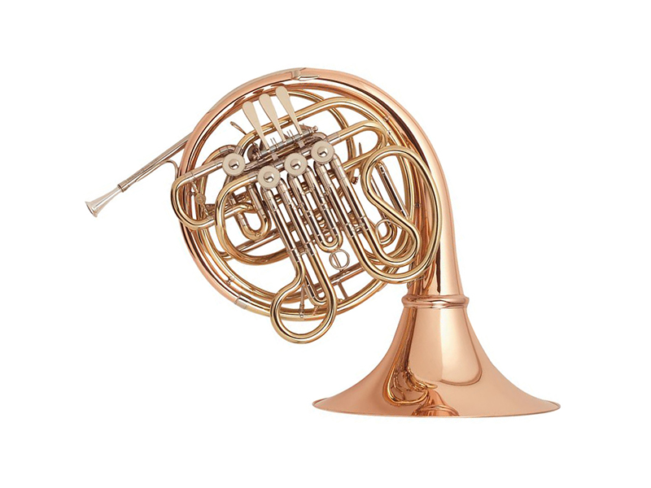
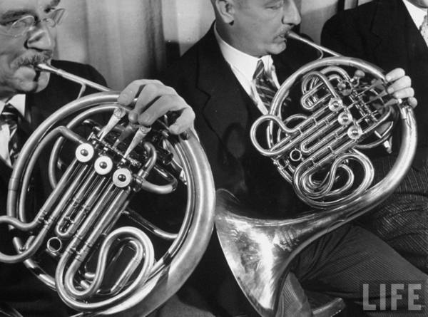
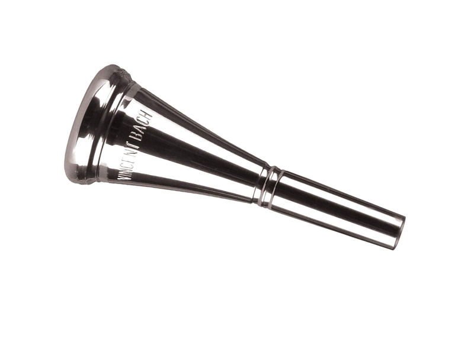

法國號
法國號是一種具有優美音色的銅管樂器，特徵是其圓柱形的管身和大型的圓形喇叭口。
它的音色既溫暖又柔和，能夠演奏出從深沉低音到明亮高音的各種音域，廣泛應用於交響樂、室內樂以及軍樂隊中。
法國號的獨特之處在於其雙曲管設計，使得音樂表達更為多樣，能夠展現豐富的音樂情感。
在演奏時，演奏者需要通過壓調嘴唇的方式控制音高和音色，這使得法國號的演奏技巧要求較高。
此外，法國號在爵士樂和流行音樂中也有著不可或缺的地位，常常用於演奏獨奏曲和旋律的編排。
圖片集


